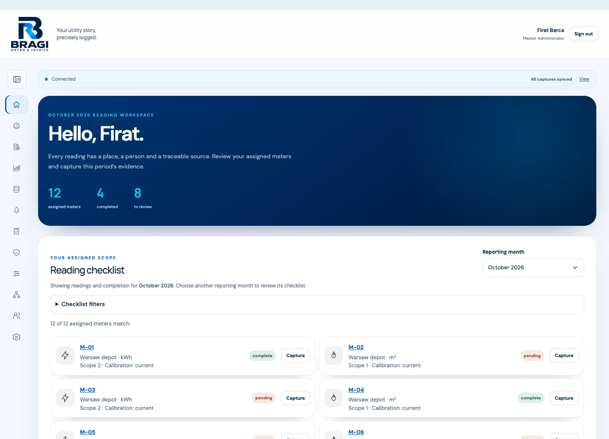
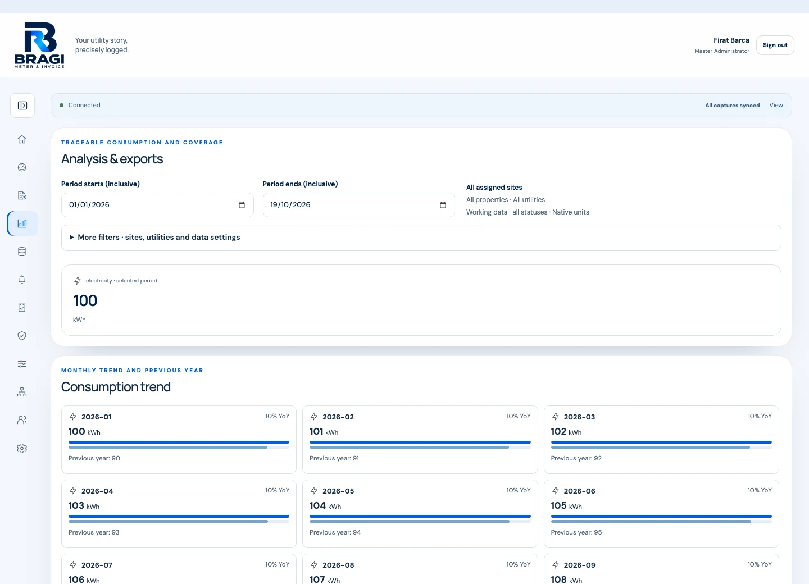
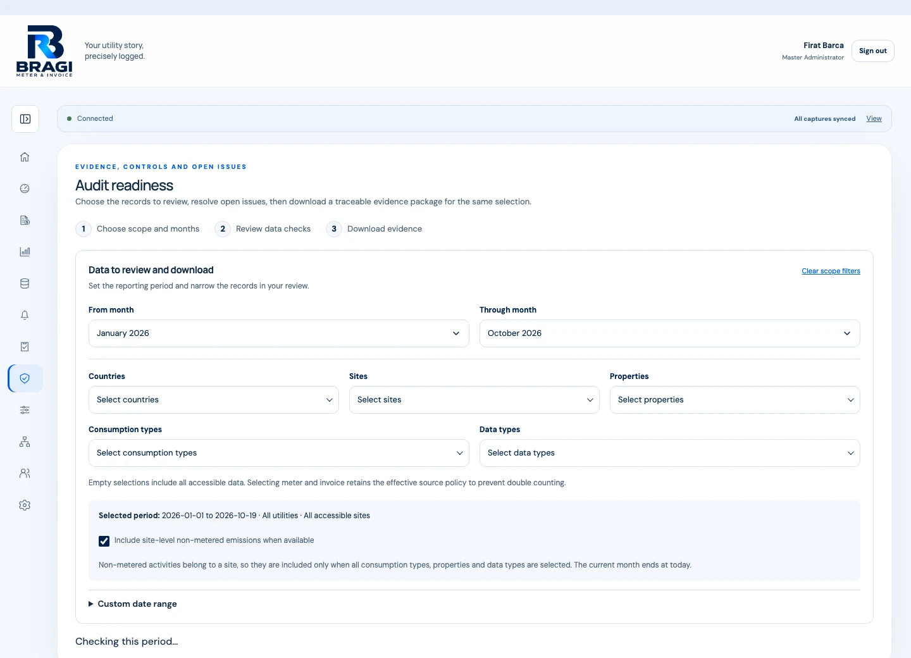

See the period in context.
Explore utility consumption, monthly trends and year-on-year comparisons. Filter by country, site, property and data type.
Bragi Meter & Invoice
Utility data. Connected.A shared workspace for utility readings, invoices and the evidence behind your numbers.
Bring the work across your sites into one traceable process. Capture the source, confirm the details, review what needs attention, and carry the record into reporting.



Screenshots show the working application with fictional test records. They contain no customer data.
The work behind the number
A meter photo in a message. An invoice in an inbox. A correction in a spreadsheet. The reporting work begins with bringing those pieces together.
Bragi connects the reading or invoice to its site, its evidence and the people who confirmed and reviewed it. The context stays with the record as it moves towards reporting.
Your utility story, precisely logged.
One connected workflow
Give each stage a clear owner and keep the source evidence within reach.
Record a meter reading or upload an invoice photo or PDF for the relevant site and meter.
Reading + original evidenceCheck the values, units and dates. Extraction can assist; a person confirms the record.
Validation + named confirmationWork through missing entries, data checks and approval decisions within the assigned scope.
Issues + independent reviewExplore trends, compare periods and export selected records with their supporting evidence.
Analysis + traceable exportsThe details that matter
Data controls belong in the everyday workflow, where records are created and reviewed.
How Bragi fits your organisationFrom site records to reporting
Move between the reporting picture and the records that explain it.
Explore utility consumption, monthly trends and year-on-year comparisons. Filter by country, site, property and data type.
Keep factor sources and validity visible. Review Scope 1 and separate location-based and market-based Scope 2 calculations where suitable approved factors are available.
Export CSV or Excel data and generate scoped evidence packages with source files, histories and a verification manifest. Open issues remain documented.
Results depend on the selected records, reporting boundary and factor coverage. Review gaps and methodology before using the figures.
Built around the people doing the work
Know which readings are due, capture the source and follow up on outstanding entries.
Reconcile utility data, review factor choices and prepare a reporting selection with its evidence.
Inspect exceptions, record decisions and trace changes back to an individual account.
A fit for your organisation
Bragi is a browser-based application that can be self-hosted. A walkthrough is a starting point for discussing your organisation, access arrangements and deployment.
Discuss your setupPeople use Bragi through a web browser. The application runs with a backend, database, private evidence storage and background jobs. It can be deployed on your organisation’s infrastructure or a suitable hosted server.
A real deployment needs its own HTTPS, access configuration, backups and operating arrangements.
Sites, properties, meters and organisational units provide the structure for the records. Explicit assignments define access, while dated changes retain historical context.
We can discuss your hierarchy, reporting needs and any adaptations before agreeing the scope.
CSV and Excel templates support structured imports. Invoice photos and PDFs can be retained as evidence, with a person checking the captured details before confirmation.
Shared invoices or complex allocation requirements should be reviewed for the intended workflow.
The application includes an account-specific queue for offline reading capture and later synchronisation. Device, browser and recovery behaviour should be checked as part of the pilot setup.
Request a walkthrough to see the workflows and discuss your use case. The screenshots on this page are product previews; this page does not provide access to a running Bragi account.
Tell me how you collect readings and invoices, how many sites are involved, and where the reporting work gets difficult.